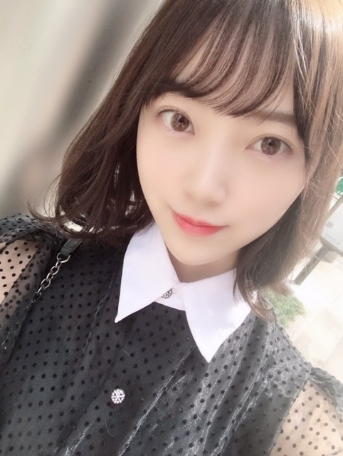
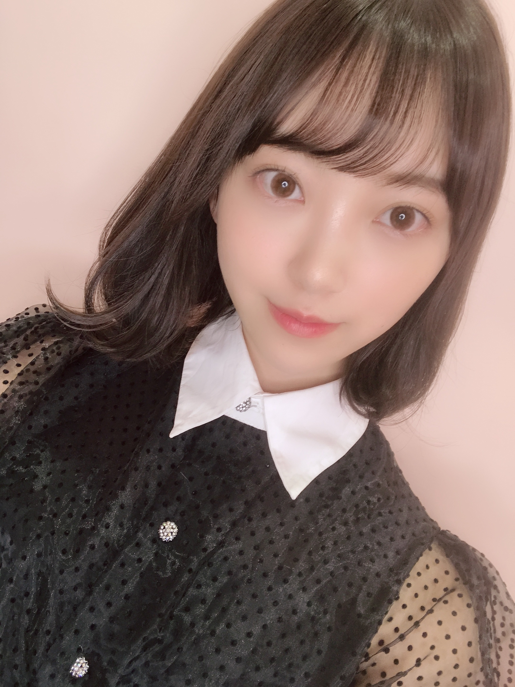
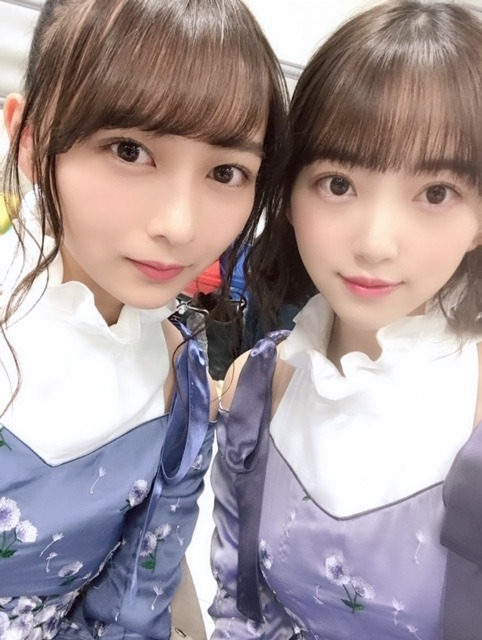
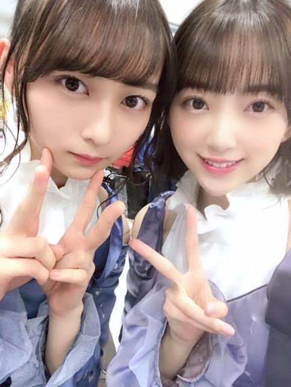

2019/0323Satクロスなネックレス

髪色、オリーブカラーにしてみました。どうかな？
すっかり春ですね
アメトーーク!3時間sp絵心ない芸人
見てくださった方ありがとうございましたm(__)m
想像以上に、絵心が無いといわれ驚きでした！
でもこれからも自分の画風とインスピレーションを大切にいろんな絵を描いていきたいと思います☺︎
久しぶりに美術館にも行きたいなぁ
すっかり春ですね
アメトーーク!3時間sp絵心ない芸人
見てくださった方ありがとうございましたm(__)m
想像以上に、絵心が無いといわれ驚きでした！
でもこれからも自分の画風とインスピレーションを大切にいろんな絵を描いていきたいと思います☺︎
久しぶりに美術館にも行きたいなぁ

みなさん優しくて本当に楽しい時間でした✨
みなさん優しくて本当に楽しい時間でした✨
今日3/23(土)23:00～24:30 NHK総合
「#坂道テレビ ～乃木と欅と日向～」
齊藤京子ちゃんと小林由依ちゃんと料理をしたりお話しをしました✨人見知りあまり出てないといいな。笑
3/30(土)18:30〜20:54 テレビ東京
「はじめて東京行ってみたら？」
日奈子と2人でゲストとして出させていただきました！涙あり笑いありで見応えたっぷりです！
発売中「ar」「B.L.T.5月号」
よろしくお願いします^-^


あやねちん だいすき♡
私、、、白玉みたい。笑
でははは
2019/03/23 20:48
コメント(435)
未央奈ちゃん。ブログ更新ありがとう！オリーブカラーの髪色春らしい良い色ですね。未央奈は、いつも おしゃーれ。ですネ！お洒落未央奈大好き。
ホットギミック楽しみすぎて、
6/28まで待たれへんから
上映4月にしてください笑
予告編上手く出来すぎな！
6/28まで待たれへんから
上映4月にしてください笑
予告編上手く出来すぎな！
堀ちゃんこんばんは！
ブログ更新お疲れ様です。
いつみても美白で素晴らしい
アメトーーク拝見しました
なかなかの画伯ぶりですが 少しトレーニングすれば改善されるんじゃないかと。
少しトレーニングすれば改善されるんじゃないかと。
番組の構成もあったんでしょうが、芸人に交じって堂々としたものですね。
画、上手くなることを願っています。
ではまた。
ブログ更新お疲れ様です。
いつみても美白で素晴らしい
アメトーーク拝見しました
なかなかの画伯ぶりですが
番組の構成もあったんでしょうが、芸人に交じって堂々としたものですね。
画、上手くなることを願っています。
ではまた。
みおなちゃん、こんにちは！
今晩の坂道テレビ、見ますよー！
すっごく楽しみです。
お昼に雷が鳴ったとき、テレビに接続していたハードディスクが動かなくなったんだけど、坂道テレビを録画するために、四方手を尽くして直しました。
電気機械に強い文学部卒です！
アメトーークも見ましたよー！
家で、ラーメンを食べながら見ていたのですが、皆さん、珍妙な絵を描かれていて、吹き出しそうになること数度。
でも、みおなちゃんの絵は、ほかの芸人さんより、さらに上を行くおもしろさでした。
ケンコバさんの「今まで見たことのないタイプの絵だ…………」という感想を聞き逃しませんでした。笑笑
そしてよみがえって来る「私、絵描きさんになるのが夢で…………」（みおな談）。
いやいや…………。
みおなちゃんの絵は、これまで何度も見ているけど、さらにパワーアップしていたようで、もう、ホント、カオスでした。
今晩の坂道テレビ、見ますよー！
すっごく楽しみです。
お昼に雷が鳴ったとき、テレビに接続していたハードディスクが動かなくなったんだけど、坂道テレビを録画するために、四方手を尽くして直しました。
電気機械に強い文学部卒です！
アメトーークも見ましたよー！
家で、ラーメンを食べながら見ていたのですが、皆さん、珍妙な絵を描かれていて、吹き出しそうになること数度。
でも、みおなちゃんの絵は、ほかの芸人さんより、さらに上を行くおもしろさでした。
ケンコバさんの「今まで見たことのないタイプの絵だ…………」という感想を聞き逃しませんでした。笑笑
そしてよみがえって来る「私、絵描きさんになるのが夢で…………」（みおな談）。
いやいや…………。
みおなちゃんの絵は、これまで何度も見ているけど、さらにパワーアップしていたようで、もう、ホント、カオスでした。
初コメです！！！！
オリーブカラーすごい似合ってて可愛いね〜
今日の坂道テレビときいちゃんとの2人の番組も絶対みるよ！
頑張ってねー！
オリーブカラーすごい似合ってて可愛いね〜
今日の坂道テレビときいちゃんとの2人の番組も絶対みるよ！
頑張ってねー！
毎回可愛いですね。オリーブカラー素敵ですね。アメトーーク!と歌番組見ましたよ。レコメン毎回楽しく聴いてます。坂道テレビ楽しみです。
オリーブカラーおっしゃれ〜♪
アメトーーク!面白かったよーーー！！！
色んな意味で衝撃的だった！！！
ピカソの娘みたいな感じ笑
テレビリアタイで観れそうだから楽しみ♪
堀ちゃん人見知りなのー？
鉄の心臓持ってるのにーー？？
白玉って...ホンマや！
アメトーーク!面白かったよーーー！！！
色んな意味で衝撃的だった！！！
ピカソの娘みたいな感じ笑
テレビリアタイで観れそうだから楽しみ♪
堀ちゃん人見知りなのー？
鉄の心臓持ってるのにーー？？
白玉って...ホンマや！
髪色めっちゃ似合ってるよ!!
ホットギミック絶対観ます
ホットギミック絶対観ます
みおな、こんばんは。更新ありがとう！ テレビ見たよ！楽しかったです。今日も楽しみです。 BLTも買います。 では、毎日みおなに良いこと沢山ありますように！ おやすみおな！！
髪色楽しんでるね〜
めっちゃ派手にしたのも見てみたいかも
ツーショットかわいい(^^)
めっちゃ派手にしたのも見てみたいかも
ツーショットかわいい(^^)
とてもかわいいです これからもずっと応援してます！
めっちゃ髪色にあってる！
アメトークまじで面白かった。ほかの番組も楽しみにしてる！
アメトークまじで面白かった。ほかの番組も楽しみにしてる！
遅くなりましたがポートメッセなごやでの個握ありがとうございました！最高でした！
アルバムは大阪も名古屋も大会やテストで行けませんがその分他の機会に行かせていただきます。
アメトーーーーーーク！！最高でしたよ(о´∀`о) とても味のある(？)絵で良かったですwww 帽子も最高に似合ってました。
CDTVも最高のパフォーマンスでした。卒業生の方々にも最高の思い出になったと思います。僕も元気を貰えました。
絢音ちゃんとのツーショット最高です(*^。^*)！！
実は個握で絢音ちゃんの所にも行かせていただきまして、、、(決して浮気とかじゃないですよwww) その時に高校生ながら梅酒をオススメされてその時の絢音ちゃんの笑顔にやられちゃいましたwwその事もあって凄くこのツーショットは嬉しいです。(2度目ですが決して浮気とかじゃないですよwww)
坂道テレビ、はじめて東京行ってみたら？どちらも観るね！
これからも身体に気をつけてください。応援しています。
あおば。
アルバムは大阪も名古屋も大会やテストで行けませんがその分他の機会に行かせていただきます。
アメトーーーーーーク！！最高でしたよ(о´∀`о) とても味のある(？)絵で良かったですwww 帽子も最高に似合ってました。
CDTVも最高のパフォーマンスでした。卒業生の方々にも最高の思い出になったと思います。僕も元気を貰えました。
絢音ちゃんとのツーショット最高です(*^。^*)！！
実は個握で絢音ちゃんの所にも行かせていただきまして、、、(決して浮気とかじゃないですよwww) その時に高校生ながら梅酒をオススメされてその時の絢音ちゃんの笑顔にやられちゃいましたwwその事もあって凄くこのツーショットは嬉しいです。(2度目ですが決して浮気とかじゃないですよwww)
坂道テレビ、はじめて東京行ってみたら？どちらも観るね！
これからも身体に気をつけてください。応援しています。
あおば。
ほりっぴ～、ナンチです♪
ブログ更新ありがとう～
アメトーーク、めっちゃ楽しかったよ
あのメンバーとやり取りしてたのがうれしかったな
さすがだよ
ベレー帽もめっちゃ可愛かったな
ブログ更新ありがとう～
アメトーーク、めっちゃ楽しかったよ
あのメンバーとやり取りしてたのがうれしかったな
さすがだよ
ベレー帽もめっちゃ可愛かったな
ブログ更新ありがとう！
髪の毛似合っとるよぉ〜
ちな、僕も今ライトブラウンに染めてます
今度感想聞きに握手会行くね！！
素直ににディスるのはダメだからね笑
ではではこの辺で！
したっけ〜〜
どさんこしゅーちゃん
髪の毛似合っとるよぉ〜
ちな、僕も今ライトブラウンに染めてます
今度感想聞きに握手会行くね！！
素直ににディスるのはダメだからね
ではではこの辺で！
したっけ〜〜
どさんこしゅーちゃん
みおちゃんブログ更新ありがとう〜*\(^o^)/*
アメトークめちゃめちゃおもしろかった！笑
絢音ちんと未央奈最高(ᯅ̈ )きいちゃんも最高(ᯅ̈ )
髪色似合ってる！♡
アメトークめちゃめちゃおもしろかった！笑
絢音ちんと未央奈最高(ᯅ̈ )きいちゃんも最高(ᯅ̈ )
髪色似合ってる！♡
未央奈ちゃんブログ更新ありがとう
オリーブカラー
めっっっっっちゃかわいい！！！！
光が射してるのもあって
盛れ盛れでより可愛く見えます
光って写真撮る上で大事ですよね
未央奈ちゃんはボブも好きだけど
ポニーテールで前髪ありの未央奈ちゃん
どストライクでタイプです(*ˊᵕˋ*)
なので前の乃木坂工事中の
乃 木 坂 対決や演技力の回
私的に最高でした
また髪が伸びたらポニーテールしてほしいです
すっかり春ですね
花粉と戦う季節がやってきましたね
マスクが顔の一部になる季節
でもお花見が好きなので
お花見したいです
未央奈ちゃんはお花見しますか？
アメトーーク見ました
CDTVもあるのでチャンネルも目も
大忙しな夜となりました
私もてっきり未央奈ちゃんは
上手い方に行くと思ったので
まさかまさかでしたが
未央奈ちゃんの味のある絵をたくさん見られて
未央奈ファンは幸せです
これからも画風とインスピレーションを大切に
絵を描いてください
絢音ちゃんとのツーショット
ありがとうございます
お二人のコンビ大好きなので
見れてとっても嬉しいです
お二人のファンなので
とってもとっても嬉しいです
二人とも国宝級にかわいい、、、
いつも写真からお二人の仲良し具合が
伝わってきます
これからも仲良し写真沢山見せてください
未央奈ちゃんがブログを更新してくれる度に
私は未央奈ちゃんが大好きになります
頻繁に更新してくれて
可愛すぎる
綺麗すぎる
お顔を出してくれて
いつもいつも楽しみにしています
最近では未央奈ちゃんのブログ
今日更新されるかな
なんて楽しみにしている自分がいます
忙しいはずなのに丁寧な文で
適度に写真も載せてくれて
ありがとうございます
これからも楽しみにしています
とっても忙しいとは思うのですが
風邪予防はしっかりして
お休みの日は家でゆっくりしてください
そしてまたオフの
プライベートの未央奈ちゃんの生活も
教えてくれると嬉しいです
日に日に可愛さが増している未央奈ちゃん
乃木坂を好きになってから
未央奈ちゃんへの愛も大きくなっていきました
これからも応援しています
未央奈ちゃんの雰囲気などすべてが
とってもとっても大好きです
未央奈大好き！！
オリーブカラー
めっっっっっちゃかわいい！！！！
光が射してるのもあって
盛れ盛れでより可愛く見えます
光って写真撮る上で大事ですよね
未央奈ちゃんはボブも好きだけど
ポニーテールで前髪ありの未央奈ちゃん
どストライクでタイプです(*ˊᵕˋ*)
なので前の乃木坂工事中の
乃 木 坂 対決や演技力の回
私的に最高でした
また髪が伸びたらポニーテールしてほしいです
すっかり春ですね
花粉と戦う季節がやってきましたね
マスクが顔の一部になる季節
でもお花見が好きなので
お花見したいです
未央奈ちゃんはお花見しますか？
アメトーーク見ました
CDTVもあるのでチャンネルも目も
大忙しな夜となりました
私もてっきり未央奈ちゃんは
上手い方に行くと思ったので
まさかまさかでしたが
未央奈ちゃんの味のある絵をたくさん見られて
未央奈ファンは幸せです
これからも画風とインスピレーションを大切に
絵を描いてください
絢音ちゃんとのツーショット
ありがとうございます
お二人のコンビ大好きなので
見れてとっても嬉しいです
お二人のファンなので
とってもとっても嬉しいです
二人とも国宝級にかわいい、、、
いつも写真からお二人の仲良し具合が
伝わってきます
これからも仲良し写真沢山見せてください
未央奈ちゃんがブログを更新してくれる度に
私は未央奈ちゃんが大好きになります
頻繁に更新してくれて
可愛すぎる
綺麗すぎる
お顔を出してくれて
いつもいつも楽しみにしています
最近では未央奈ちゃんのブログ
今日更新されるかな
なんて楽しみにしている自分がいます
忙しいはずなのに丁寧な文で
適度に写真も載せてくれて
ありがとうございます
これからも楽しみにしています
とっても忙しいとは思うのですが
風邪予防はしっかりして
お休みの日は家でゆっくりしてください
そしてまたオフの
プライベートの未央奈ちゃんの生活も
教えてくれると嬉しいです
日に日に可愛さが増している未央奈ちゃん
乃木坂を好きになってから
未央奈ちゃんへの愛も大きくなっていきました
これからも応援しています
未央奈ちゃんの雰囲気などすべてが
とってもとっても大好きです
未央奈大好き！！
髪似合ってるよ
見ますね
見ますね
好き
未央にゃブログ更新有難う
絢音ちゃん(๑´ω`๑)♡
未央にゃ
どうも有難うm(_ _)m
絢音ちゃん(๑´ω`๑)♡
未央にゃ
どうも有難うm(_ _)m
オリーブ似合うのいいな〜！
わたし寒色系の色似合わなかった〜
赤系がしっくりくる〜
未央奈は白玉ちゃん色だから似合うのかな〜！
明日髪色ちゃんとみてみるね〜！！
明日会えるの楽しみぃ（＾ω＾）☆
ばいぃ
やっぱり今の髪の長さが好きだな〜
絵心ない芸人おもしろかったよー
未央奈らしい絵だったね
ホットギミック楽しみにしてるね！！
今日もお疲れ様〜
絵心ない芸人おもしろかったよー
未央奈らしい絵だったね
ホットギミック楽しみにしてるね！！
今日もお疲れ様〜
髪、ちょっと伸びたのかな？
かわいい！
やっぱりロングもショートも似合うよね～
絢音ちゃんとのツーショットもすっごくいいよ！
明日は休みかな？休みなら全力で遊んだり寝たり笑、休みじゃなかったらお仕事頑張って！
かわいい！
やっぱりロングもショートも似合うよね～
絢音ちゃんとのツーショットもすっごくいいよ！
明日は休みかな？休みなら全力で遊んだり寝たり笑、休みじゃなかったらお仕事頑張って！
アメトークの絵すごかった笑！未央奈〜オリーブカラーめっちゃ似合ってる〜〜！！！
似合ってます！
未央奈さんはなんでも似合いますね、、、。
That could not be better！
最高！
未央奈さんはなんでも似合いますね、、、。
That could not be better！
最高！
アメトーク見たよ～。
いつもと変わらないみおなちゃんで
番組に馴染んでいましたね。
犬好きのみおなちゃんらしく、犬の絵
が妙に細部まで描かれていたのが
気に入りました。
２期生が全員で出てた生ドル見返して
たんだけど、
みおなちゃんもあやねちゃんも当時か
ら可愛いのは変わってないね。
今は洗練されて綺麗な可愛さ。
いつもと変わらないみおなちゃんで
番組に馴染んでいましたね。
犬好きのみおなちゃんらしく、犬の絵
が妙に細部まで描かれていたのが
気に入りました。
２期生が全員で出てた生ドル見返して
たんだけど、
みおなちゃんもあやねちゃんも当時か
ら可愛いのは変わってないね。
今は洗練されて綺麗な可愛さ。
絵心ない芸人めっちゃ面白かったけど、自分はみおなちゃん絶対に絵がうまいと思ってるからね！2期生のなかで一番推してるよ～これからも頑張ってね！
堀ちゃんの顔が好きすぎる。
絵心もみました！なんか進化した画風を見られて嬉しかった◎
独自の路線を突っ走った方がかっこいいと思います。
絵心もみました！なんか進化した画風を見られて嬉しかった◎
独自の路線を突っ走った方がかっこいいと思います。
アメトークすごいおもしろかったよ！
新しい髪色もすごいにあってる！
新しい髪色もすごいにあってる！
かわいい！！！
今日、ハンドベルの定期演奏会終わったんですけどみおなちゃん見て疲れ吹っ飛びましたぁー！ありがと！！
今日、ハンドベルの定期演奏会終わったんですけどみおなちゃん見て疲れ吹っ飛びましたぁー！ありがと！！
BLTよかったどおおお
未央奈〜こんばんは〜アメトーーク!観たよ〜 面白かった〜ずっと笑ってたし乃木中でもまた画伯大会やって欲しいなって思っちゃいました〜絢音ちゃんとの仲良し姉妹のツーショット写真ありがとう〜私はオリーブカラー未央奈に似合ってると思うよ〜より美人が映えて見えるからね〜
面白かった〜ずっと笑ってたし乃木中でもまた画伯大会やって欲しいなって思っちゃいました〜絢音ちゃんとの仲良し姉妹のツーショット写真ありがとう〜私はオリーブカラー未央奈に似合ってると思うよ〜より美人が映えて見えるからね〜 未央奈〜大好き〜
未央奈〜大好き〜
アメトークめっちゃ面白かった✨
未央奈ちゃんこれからもたくさん絵を描いて個展開いて欲しい✨
未央奈ちゃんこれからもたくさん絵を描いて個展開いて欲しい✨
未央奈さん、お疲れ様です。
頻繁にブログ更新して下さって、いつも本当にありがとうございます。
アメトーークも見ました！
未央奈さんらしさが全面に出ていて、テレビの前でずっと笑っていました。
芸人の皆さんとの絡みも本当に良かったです。
そして、今晩の坂道テレビもしっかりオンタイムで拝見しますね！
こちらも楽しみです！
それでは、またコメントします。
頻繁にブログ更新して下さって、いつも本当にありがとうございます。
アメトーークも見ました！
未央奈さんらしさが全面に出ていて、テレビの前でずっと笑っていました。
芸人の皆さんとの絡みも本当に良かったです。
そして、今晩の坂道テレビもしっかりオンタイムで拝見しますね！
こちらも楽しみです！
それでは、またコメントします。
未央奈、ブログ更新ありがとう。
オリーブカラーめちゃくちゃ良きです！
アメトーーク、最高に面白かったですよ！
優しい芸人さん達が沢山でよかったですね〜
今夜の坂道テレビも楽しみにしてますね。
すずほりコンビもありがとう。
CDTV、とっても輝いてましたよ！
季節の変わり目、体調にお気をつけて！！
またの更新、待っています。
オリーブカラーめちゃくちゃ良きです！
アメトーーク、最高に面白かったですよ！
優しい芸人さん達が沢山でよかったですね〜
今夜の坂道テレビも楽しみにしてますね。
すずほりコンビもありがとう。
CDTV、とっても輝いてましたよ！
季節の変わり目、体調にお気をつけて！！
またの更新、待っています。
みおなめっちゃ好き‼️
アメトーク面白かったよ‼️
これからも全力で応援します
アメトーク面白かったよ‼️
これからも全力で応援します
こんばんは。
アメトーク見ました。
髪色似合って可愛いですね。
アメトーク見ました。
髪色似合って可愛いですね。
みおな〜〜！
ブログ更新ありがとう！
CDTVの衣装個人的にお気に入り
あやねちゃんとの2ショット可愛すぎでしょ！！
ブログ更新ありがとう！
CDTVの衣装個人的にお気に入り
あやねちゃんとの2ショット可愛すぎでしょ！！
未央奈さん！こんばんは〜❤️❤️❤️❤️ ＼(^o^)／ ブログの更新！待ってましたよ〜 本当にありがとうございますm(_ _)m 髪色☆彡綺麗〜❤️❤️❤️❤️❤️ まるで聖母のよう‥‥❤️❤️❤️❤️❤️❤️❤️❤️❤️❤️❤️❤️❤️❤️❤️❤️❤️ (o^^o)(o^^o) 本当綺麗〜❤️❤️❤️ですね ar来たので、早速見ますね 先日のTV!絵心ないなんて、未央奈さんに、失礼ですよね。 未央奈さんの絵！画面一面優しさに溢れていて、それで味のある素敵な絵だと思いますよ❤️❤️❤️❤️❤️❤️ 未央奈さんらしい絵です‥❤️ (o^^o) でも未央奈さんは、中学校の校章デザインにも選ばれた程の実績がありますよね☆彡 未央奈さん！美術館に行くのでしたら、スペインのホアン・ミロという画家の絵が、お薦めですよ☆彡 何か子供心満開というか、画面一面に無邪気さいっぱいの不思議な絵ですよ☆彡☆彡☆彡 未央奈さんにも、勉強になると思います。じゃあ、未央奈さん！今夜はブログ！を本当にありがとうございましたm(_ _)m もうすぐで坂道TVが始まりますネ❤️❤️❤️❤️❤️❤️❤️❤️❤️❤️❤️❤️❤️❤️ 未央奈さんの料理！早く見てみたい‥❤️❤️❤️❤️❤️❤️❤️❤️❤️❤️❤️❤️ じゃあ、未央奈さん！元気でね 未央奈さん！なにか風邪引きがちみたいなので、心配しています。今夜は、大丈夫ですか？ 今夜は、素敵な写真を本当にありがとう！！ 未央奈さん！今夜も元気出してネ❤️❤️❤️❤️❤️❤️❤️❤️❤️❤️❤️❤️❤️❤️❤️ ( ´ ▽ ` )ﾉ
ブログ更新ありがとうございます。
ホットギミック絶対見ます!
ホットギミック絶対見ます!
私は、未央奈ちん、大好き！❤️
アメトーク観たよ！
今日の23:00からの番組も観るよ♪
録画もしてま～す(*^^*)楽しみ！
アメトーク観たよ！
今日の23:00からの番組も観るよ♪
録画もしてま～す(*^^*)楽しみ！
ブログ更新ありがとう
堀ちゃんアメトーク見たよ、凄く可愛いかったよ(^-^)
これからも応援してるよ
堀ちゃんアメトーク見たよ、凄く可愛いかったよ(^-^)
これからも応援してるよ
未央奈の画風が君らしさ！堀らしさ！だよ！
ずっと僕らを楽しませてください笑
番組待機しマース
ずっと僕らを楽しませてください笑
番組待機しマース
春だね～
今日は冬だったけどさ～(笑)
みんな軽装になっていきますよね。
髪色も明るくなりますよね。
･･･いかんいかん。
象の足が･･･
美術館の影響ありますよね。
え？料理･･･
ま、まさか･･･
ピーマンオンリー！！
あ、寿司食べたくなってきた･･･
おにぎりもいいな～
ツナマヨ、塩こんぶ、鮭、塩･･･
ざんま･･･
白玉･･･最後に食べたのもしかしたら、
小学生かも。
生徒会コンビですね。
今日は冬だったけどさ～(笑)
みんな軽装になっていきますよね。
髪色も明るくなりますよね。
･･･いかんいかん。
象の足が･･･
美術館の影響ありますよね。
え？料理･･･
ま、まさか･･･
ピーマンオンリー！！
あ、寿司食べたくなってきた･･･
おにぎりもいいな～
ツナマヨ、塩こんぶ、鮭、塩･･･
ざんま･･･
白玉･･･最後に食べたのもしかしたら、
小学生かも。
生徒会コンビですね。
髪色似合ってるー！可愛い！
可愛すぎ
アメトーーク!みたよ。馴染んでたね。笑笑。ひなこちゃんとのテレビ出演楽しみ^_^
未央奈ブログありがとう
ベレー帽最高でしたよ
ベレー帽最高でしたよ
みおちゃんブログ更新ありがとう♪
かなり暖かい日が続いて来たね！もう少しで春かな(^-^)
楽しみだね♪春になるとさらに可愛いみおちゃんが見れるかなー(｡･ω･｡)
今仕事探ししてて大変だけど、いい仕事に巡り会えるよう頑張ります！！
かなり暖かい日が続いて来たね！もう少しで春かな(^-^)
楽しみだね♪春になるとさらに可愛いみおちゃんが見れるかなー(｡･ω･｡)
今仕事探ししてて大変だけど、いい仕事に巡り会えるよう頑張ります！！


推しの堀ちゃんときいちゃんを同時に観れる〜
堀ちゃんの絵は他の人は書けないから
これは堀ちゃんの才能だと思うよ！